<!DOCTYPE html>
<html lang="en">

<head>
    <title>Boilerplate</title>
    <meta charset="UTF-8">
    <meta name="description" content="DESCRIBE YOUR SITE">
    <meta name="keywords" content="web design, student, Maryville">
    <meta name="author" content="Tyler Gray">
    <!-- ================ CSS links -->
    <link href="css/index.css" rel="stylesheet" type="text/css">
    <!-- ================ font links -->
    <link rel="stylesheet" href="https://use.typekit.net/zbt4nzh.css">

</head>

<body>

    <!-- =============== header -->
    <!-- <header>
        <div class="content-width">
            <h1>Header Headline</h1>
        </div>
    </header> -->


    <!-- ================ main navigation -->
    <nav>
        <div class="content-width">
            <ul>
                <li><a href="#s_1" class="btn_01" data-stage="stage10">SLIP ON</a></li>
                <li><a href="#s_2" class="btn_02" data-stage="stage20">AUTHENTIC</a></li>
                <li><a href="#s_3" class="btn_03" data-stage="stage30">ERA</a></li>
                <li><a href="#s_4" class="btn_04" data-stage="stage50">Sk8-Hi</a></li>
                <li><a href="#s_5" class="btn_05" data-stage="stage60">OLD SKOOL</a></li>
                <li><a href="#s_6" class="btn_06" data-stage="stage70">WAFFLE SOLE</a></li>
                <li><a href="#s_7" class="btn_07" data-stage="stage80">CUSTOMS</a></li>
            </ul>
        </div>
    </nav>


    <!-- =============== primary sections -->
    <main class="wrapper" id="js-wrapper">
        <div class="sections" id="slideContainer">
            <section class="sec_10" id="s_1">
                <div class="content-width">
                    <div class="content">
                        <h2>SLIP ON</h2>
                        <p>Originally known as Style #98.
                            The Classic Slip Ons were introduced in 1977. The shoe is inspired by the boat shoe. It
                            helped
                            Vans go from an exclusive audience of skaters & extremists to everyone including Star Wars
                            and
                            Disney enthusiasts. The Slip-On exploded in popularity by Sean Penn sportinghis black and
                            white
                            checked Slip-Ons in the film Fast Times
                            At Ridgemont High.</p>
                    </div>
                    
                </div>
            </section>

            <section class="sec_20" id="s_2">
                <div class="content-width">
                    <h2>AUTHENTIC</h2>
                    <p>After the Van Doren Rubber Company took off in 1966 in Anaheim, California. The Vans #44 Deck
                        Shoe
                        was released which is now known today as the Vans Authentic. Not long after,Skateboarders are
                        seen
                        sporting 44’s all over Southern California. </p>
                    
                </div>
            </section>

            <section class="sec_30" id="s_3">
                <div class="content-width">
                    <h2>ERA</h2>
                    <p>The Vans #95, now known as the Era, with a padded collar and different color combinations, is
                        designed by Tony Alva and Stacy Peralta and becomes the shoe of choice for a generation of
                        skateboarders.</p>
                    
                </div>
            </section>
            <section class="sec_40" id="s_4">
                <div class="content-width">
                    <h2>Sk8-Hi</h2>
                    <p>The Sk8-Hi took skate functionality to the next levelabove the ankle, where skateboarders used
                        and
                        abused their lower extremities the most. The Sk8-Hi not only shielded bones from skateboards
                        catapulted at thembut also brought a whole new look to the park.</p>
                    
                </div>
            </section>
            <section class="sec_50" id="s_5">
                <div class="content-width">
                    <h2>OLD SKOOL</h2>
                    <p>The Old Skool is Vans' first skate shoe that incorporated leather panels for increased
                        durability.
                        What started as a random doodle by Paul Van Doren was originally referred to as the "jazz
                        stripe"
                        and has become the unmistakable hallmark of the Vans brand.</p>
                    
                </div>
            </section>
            <section class="sec_60" id="s_6">
                <div class="content-width">
                    <h2>WAFFLE SOLE</h2>
                    <p> Paul Van Doren packed up his family and moved from Massachusetts to sunny Anaheim, California to
                        start a new kind of shoe manufacturing company. That is where the waffle sole began. Paul Van
                        Doren believed that making an affordable shoe of the best quality was possible. The waffle sole
                        was a key point in this idea. Van Doren did not set out to make a skate shoe but he built shoes
                        with great traction at an affordable price and local skateboarding enthusiasts chose Vans as
                        their shoe of choice.</p>
                    
                </div>
            </section>
            <section class="sec_70" id="s_7">
                <div class="content-width">
                    <h2>CUSTOMS</h2>
                    <p> Vans continues to inspire creativity with expansion of its Vans Customs platform. The new system
                        offers customization across a range of footwear classifications and allows the customs designer
                        more freedom than ever to develop personal and unique designs.</p>
                </div>
            </section>

        </div>
    </main>
    <!-- =============== footer -->
    <!-- <footer>
        <div class="content-width">
            <p>Footer Content</p>
        </div>
    </footer> -->

    <!-- =============== scripts -->
    <script src="https://code.jquery.com/jquery-3.4.0.min.js"></script>
    <script src="https://cdnjs.cloudflare.com/ajax/libs/gsap/2.1.2/TweenMax.min.js"></script>
    <script src="https://cdnjs.cloudflare.com/ajax/libs/ScrollMagic/2.0.6/ScrollMagic.min.js"></script>
    <script src="https://cdnjs.cloudflare.com/ajax/libs/ScrollMagic/2.0.6/plugins/animation.gsap.js"></script>
    <!-- <script src="https://cdn.jsdelivr.net/npm/jquery.scrollto@2.1.2/jquery.scrollTo.min.js"></script> -->
    <script src="https://cdnjs.cloudflare.com/ajax/libs/gsap/1.20.4/plugins/ScrollToPlugin.min.js"></script>
    <!-- The core Firebase JS SDK is always required and must be listed first -->
    <script src="/__/firebase/7.10.0/firebase-app.js"></script>

    <!-- TODO: Add SDKs for Firebase products that you want to use
     https://firebase.google.com/docs/web/setup#available-libraries -->
    <script src="/__/firebase/7.10.0/firebase-analytics.js"></script>

    <!-- Initialize Firebase -->
    <script src="/__/firebase/init.js"></script>

    <!-- local scripts last last last last last last last last last last last last last last last last last last last last -->
    <script type="text/javascript" src="js/index.js"></script>

</body>

</html>